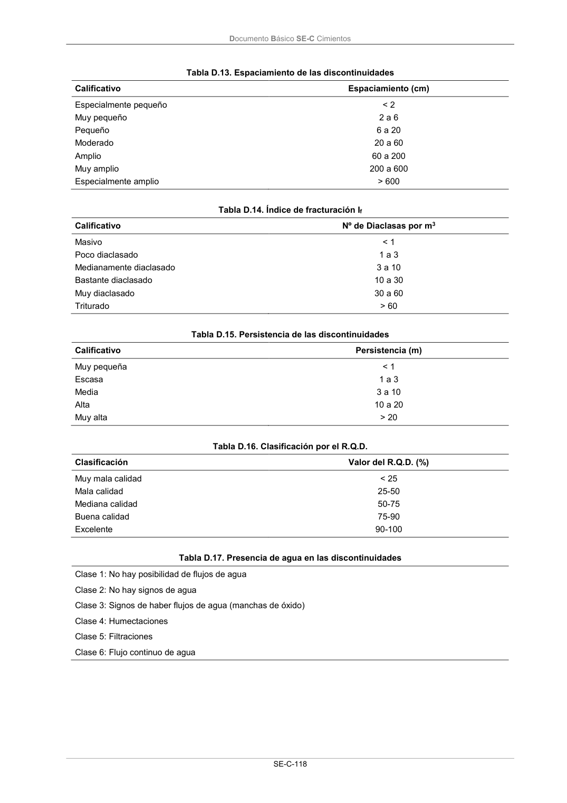

DB-SE-C Cimientos · edición 2019-12-20 · capa oficial
Documento DB-SE-C-oficial · SHA-256 del PDF a71133f4b0dca253e45ea3071c70f2a512354bcc5cd841bf89b1a502f567ac5e
Página física 123 de 165.
Copia fiel del PDF fuente · Fuente oficial
Ficha de la disposición en la fuente oficial
Formato: Texto de la página (Markdown)
Documento Básico SE-C Cimientos SE-C-118 Tabla D.13. Espaciamiento de las discontinuidades Calificativo Espaciamiento (cm) Especialmente pequeño Muy pequeño Pequeño Moderado Amplio Muy amplio Especialmente amplio < 2 2 a 6 6 a 20 20 a 60 60 a 200 200 a 600 > 600 Tabla D.14. Índice de fracturación If Calificativo Nº de Diaclasas por m3 Masivo Poco diaclasado Medianamente diaclasado Bastante diaclasado Muy diaclasado Triturado < 1 1 a 3 3 a 10 10 a 30 30 a 60 > 60 Tabla D.15. Persistencia de las discontinuidades Calificativo Persistencia (m) Muy pequeña Escasa Media Alta Muy alta < 1 1 a 3 3 a 10 10 a 20 > 20 Tabla D.16. Clasificación por el R.Q.D. Clasificación Valor del R.Q.D. (%) Muy mala calidad Mala calidad Mediana calidad Buena calidad Excelente < 25 25-50 50-75 75-90 90-100 Tabla D.17. Presencia de agua en las discontinuidades Clase 1: No hay posibilidad de flujos de agua Clase 2: No hay signos de agua Clase 3: Signos de haber flujos de agua (manchas de óxido) Clase 4: Humectaciones Clase 5: Filtraciones Clase 6: Flujo continuo de agua
